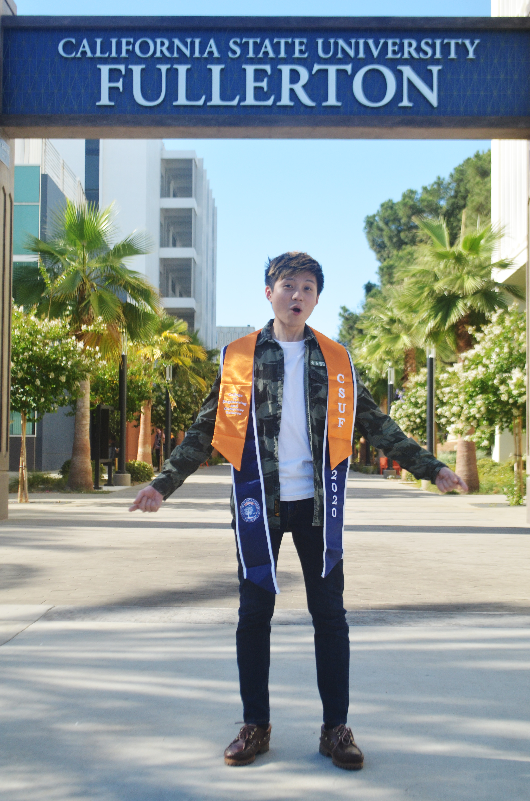
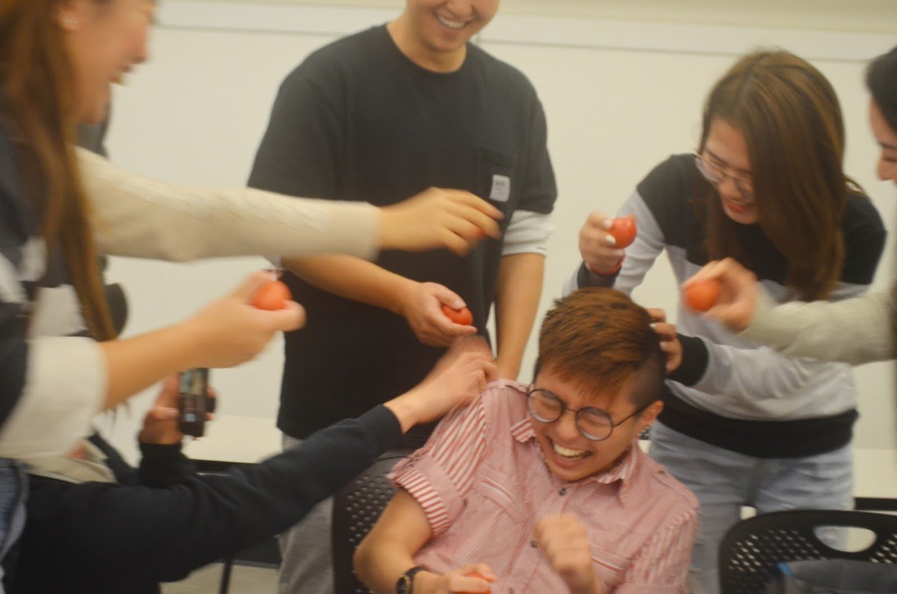

Introduction
Basic Information
City of Residence: Fullerton, California
Occupation: Data Analyst
Personal Interests
Hobby: Badminton, Flying Drones, Photography
Favorite Food: Japanese Cuisine & Italian Pasta
Favorite Past-time: Watching Japanese Anime & Chinese Historical Drama
Guilty Pleasure: I like to cosplay.
Dream Holiday Location: Hokkaido, Japan
Technological Interests: Robotics, High-Tech Farming & Agricultural robots, Medical Robots, Artificial Intelligence in Healthcare
Economic Interests: Economy of East Asia, Post-COVID-19 Economic & Supply Chain Reforms
Professional Information
Education:
B.S. in Computer Science, B.A. in Economics, California State University, Fullerton, 2017 - 2021
Minors: Mathematics & Asian Studies
Computer Language:
C++, Python, html, Javascript, R, Matlab
Human Language:
Indonesian: Native Proficiency
English: Professional Proficiency
Mandarin: Professional Proficiency
Japanese: Advanced Proficiency
Enrollment in Front-End Engineering Class
Rationale
Professor F. Holliday encouraged me to take this class as he said it is essential for every computer scientist to know how to create a website for himself/herself.
Secondly, I was pretty excited, too, when I saw that Prof. Chary Vielma would teach this class.
I had a brief affinity with her in CPSC 301; I think she is a cool, patient, and helpful professor.
Personal Interests & Past Experience
I used to blog a lot during elementary school when Facebook was still not available.
I maintained a visually appealing personal website and often competed with friends for the most creative website.
I even designed blog templates for my friends, class, and student clubs to use.
However, I stopped blogging towards the junior year of middle school as my sinister Asian parents think I was wasting time on that.
It's been almost a decade since I last touched HTML, so I thought I might revise it and break out of my shell to create my site from scratch without the use of hosting sites.
Reflections
I am very thankful for the opportunities I received in this class.
I managed to get into a group where the other four students are native Mandarin Speakers.
We did our discussion in Mandarin; I get to practice my Mandarin in a professional setting and experience a different working culture.
This experience helps me to prepare for my career development in Taiwan in the future.
Photo Album
1. Early-Graduation Photo

Early Grad Pic
I took this photo after Spring Semester 2020 ended.
I feel that I might die any day if I were to get caught with COVID-19;
So I should at least take a grad picture to send it to my parents back in my Indonesian hometown.
2. Who's dis kiddo?
 Who's kid?
Who's kid?
In many Asian Traditions, the birthday kid will be treated with drumstick and a red egg.
Cracking the red eggs and breaking the shell during birthday symbolize rebirth.
But if there are too many red eggs prepared, there is a creative way to celebrate it!
Smash it on the birthday boy/girl's head! It is said to make them smarter.
And this brings you to the third photo:
3. Friends come first or the eggs?

Egg Party
My friends like to bully me. :((